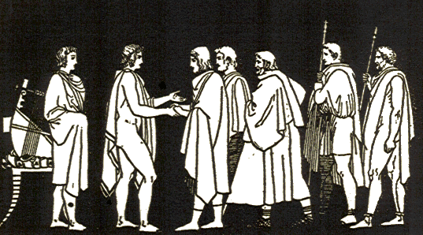

August 2012
31/08/2012 08:25:47
¶
●
Up to his side he dashed and flanked Great Ajax tight, let fly with a spear and the glinting spearpoint hit the son of Phausias, Apisaon captain of armies, square in the liver, up under the midriff— his knees went limp as Eurypylus rushed in, starting to rip the armor off his shoulders.
126: Eurypylus kills Apisaon
Homer, The Iliad book 11. Translated by Robert Fagles
#homer #iliad #fagles #book11 #death126 #liver #eurypylus #apisaon #spear
30/08/2012 08:22:32
¶
●
they sped the careening car into both milling armies, trampling shields and corpses, axle under the chariot splashed with blood, blood on the handrails sweeping round the car, sprays of blood shooting up under the stalions’ hoofs and churning whirling rims.
Some general chariot based carnage
Homer, The Iliad book 11. Translated by Robert Fagles
#homer #iliad #fagles #blood #lots of blood #did I mention the blood
29/08/2012 08:23:54
¶
●
By charging down the Trojans Ajax killed Doryclus, bastard son of Priam—he wounded Pandocus next, wounded Lysander, Pyrasus, then Pylartes.
121, 122, 123, 124 & 125: Telamonian Ajax kills Doryclus, Pandocus, Lysander, Pyrasus, Pylartes
whilst the quote above only mentions wounding it seem to me that the context suggests these guys aren’t getting up again.
Homer, The Iliad book 11. Translated by Robert Fagles
#homer #iliad #fagles #book11 #death121 #death126 #telamonian ajax #Doryclus #Pandocus #Lysander #Pyrasus #trojan
28/08/2012 08:08:00
¶
●
And spinning in terror off he ran but as he spun Odysseus plunged a spear in his back between the shoulders— straight through his chest the shaft came jutting out and down Socus crashed, Odysseus vaunting over him: “Socus, son of Hippasus, skilled breaker of horses, so, Death in its rampage outraced you—no escape. No, poor soldier. Now your father and noble mother will never close your eyes in death—screaming vultures will claw them out of you, wings beating your corpse! But I, if I should die, my comrades-in-arms will bury me in style!
120: Odysseus kills Socus
“your father and noble mother will never close your eyes in death—screaming vultures will claw them out of you, wings beating your corpse!” !
Homer, The Iliad book 11. Translated by Robert Fagles
Odysseus really knows how to rub it in.
#back #book11 #chest #death120 #fagles #homer #iliad #odysseus #socus #spear #trojan #+
27/08/2012 07:57:00
¶
●
so the Trojans ringed Odysseus dear to Zeus, rushing him straight on. But he lunged first, wounding lordly Deiopites, spearshaft slicing the Trojan’s shoulder, then cut down Thoon and Ennomus in their blood, Chersidamas next, vaulting down from his car— Odysseus caught him up under the bulging shield with a jabbing spear that split him crotch to navel— the man writhed in the dust, hands clutching the earth.
115,116,117,118 & 119: Odysseus kills Deiopites, Thoon, Ennomus, Chersidamas and Charops
Homer, The Iliad book 11. Translated by Robert Fagles
#homer #iliad #fagles #book11 #odysseus #Deiopites #Thoon #Ennomus #Chersidamas #Charops #spear #crotch #trojan
26/08/2012 08:23:00
¶
●
Diomedes hurled a spear that struck Agastrophus, Paeon’s warrior son, and smashed the joint of his hip but his team was not close by for a fast escape— a big mistake, the fool. His driver held them reined off at the side while he advanced through the front ranks on foot, plowing on till he lost his own life…
114: Diomedes kills Agastrophus
Homer, The Iliad book 11. Translated by Robert Fagles
#homer #iliad #fagles #book11 #death114 #diomedes #agastrophus #spear #hip
25/08/2012 08:17:50
¶
●
and Odysseus killed Hippodamus, killed Hypirochus
112 & 113: Odysseus kills Hippodamus and Hypirochus
Homer, The Iliad book 11. Translated by Robert Fagles
#homer #iliad #fagles #book11 #death112 #death113 #odysseus #hippodamus #hypirochus
24/08/2012 08:30:27
¶
●
—the forces of black death drove them on and Diomedes a marvel with a spear destroyed them both, stripped them of life breath and tore their gear away
110 & 111: Diomedes kills two sons of Merops
Homer, The Iliad book 11. Translated by Robert Fagles
#homer #iliad #fagles #book11 #diomedes #spear #trojan
23/08/2012 08:23:38
¶
●
But all the same he hurled Thymbraeus down to the ground from his car— Diomedes speared his left breast as Odysseus killed the warlord’s aide in arms Molion, tall as a god and left them there for dead, their fighting finished. Then both went thrashing into the lines to make slaughter as two wild boards bristling, ramping back for the kill,
198 & 109: Diomedes kills Thymbraeus, Odysseus kills Molion
Homer, The Iliad book 11. Translated by Robert Fagles
#homer #iliad #fagles #book11 #diomedes #odysseus #molion #thymbraeus #spear #chest #trojan
22/08/2012 08:17:34
¶
●
Who was the first he slaughtered, who the last, Hector son of Priam, now Zeus gave him glory? Aseus first, Autonous next and then Opites, Dolops, Clytius’ son, and Opheltius, Agelaus, Aesymnus and Orus, Hipponous staunch in combat. These were the argive captains Hector killed then went for the main mass
99 - 107: Hector kills Asaeus, Autonous, Opites, Dolops, Opheltius, Agelaus, Aesymnus, Orus and Hipponous
Homer, The Iliad book 11. Translated by Robert Fagles
#homer #iliad #fagles #book11 #hector #asaeus #Autonous #Opites #Dolops #Opheltius #Agelaus #Aesymnus #Orus #Hipponous #death99 #death107
21/08/2012 08:28:34
¶
●
Agamenon lunged up, under his bossed shield, thrust home hard with the polished bronze point, unstrung his limbs and reared and lopped his head and the head tumbled onto his fallen brothers corpse. So then and there under royal Agamemnon’s hands the two sons of Antenor filled out their fates and down they plunged to the strong House of Death.
98: Agamemnon kills Coon
(I’m assuming for the purposes of tagging that the lopping was done with a sword rather than the spear, which I’m imagining is otherwise occupied. might X-ref with other translations and update later)
Homer, The Iliad book 11. Translated by Robert Fagles
#homer #iliad #fagles #book11 #death98 #sword #head #spear
20/08/2012 08:25:47
¶
●
And, seizing the spearshaft powerful Agamemnon dragged it toward him, tussling like some lion and wrenching it free from Iphidamas’ slack grasp he hacked his neck with a sword and loosed his limbs. And there he dropped and slept the sleep of bronze, poor soldier, striving to help his fellow Trojans, far from his wedded wife, his new bride…
97: Agamemnon kills Iphidamas
Homer, The Iliad book 11. Translated by Robert Fagles
#homer #iliad #fagles #book11 #agamemnon #iphidamas #sword #neck
19/08/2012 08:28:42
¶
●
Now powerful Agamemnon caught [Antimachus’] two sons riding the same chariot, both struggling to curb their high-strung team the reigns slipped their grasp, both horses panicked as Agamemnon ramped up in their faces like a lion— both fighters shouting from their chariot, pleading,
…
but only heard merciless voice in answer: “Cunning Antimacus! … You’re his sons? Now pay for your father’s outrage, blood for blood!”
And he piched Pisander off the chariot onto earth and plunged a spear in his chest—the man crashed on his back as Hippolochus leapt away, but him he killed on the ground, slashing off his arm with a sword, lopping off his head and he sent him rolling through the carnage like a log.
95 & 96: Agamemnon kills Pisander and Hippolochus
Agamemnon, ramped up in the horses’ faces!
Homer, The Iliad book 11. Translated by Robert Fagles
#homer #iliad #book11 #fagles #sword #spear #head #arm #chest #agamemnon #pisander #hippolochus
18/08/2012 08:17:32
¶
●
But now it was Agamemnon lord of far-flung kingdoms catching up with Isus— he stabbed his chest with a spear above the nipple, Antiphus he hacked with a sword across the ear and hurled him from his chariot, rushing fast to rip the splendid armor off their bodies.
93 & 94: Agamemnon kills Isus & Antiphus
Homer, The Iliad book 11. Translated by Robert Fagles
#homer #iliad #agamemnon #fagles #book11 #spear #ear #chest #nipple #sword #Isus #Antiphus #trojan #head #death93 #death94
17/08/2012 08:16:51
¶
●
And right in the midst sprang Agamemnon first and killed a fighter, Bienor, veteran captain, then his aide Oileus lashing on their team. down from the car he’d leapt, squaring off, charging in full fury, full face, straight into Agamemnon’s spearhead ramming sharp— the rim of the bronze helmet could not hold it, clean through heavy metal and bone the point burst and the brains splattered all inside the casque. He battered Oileus down despite the Trojan’s rage and the lord of fighters left them lying there, both dead and their chests gleamed like bronze as he stripped them bare.
91 & 92: Agamemnon kills Bienor and Oileus
Homer, The Iliad book 11. Translated by Robert Fagles
#homer #iliad #fagles #book11 #agamemnon #bienor #oileus #face #head #brain #spear #trojan #death92 #death91
16/08/2012 08:23:00
¶
●
Athena, eyes blazing, breathed fury into Diomedes and he went whirling into the slaughter now, hacking left and right and hideous groans broke from the dying Thracians slashed by the sword—the ground ran red with blood. As a lion springs on flocks unguarded, shepherd gone, pouncing on goats or sheep and claw-mad for the kill, so Tydeus’ son went tearing into that Thracian camp until he’d butchered twelve. Each man he’d stand above and chop with the sword, the cool tactician Odysseus grappled from behind, grabbing the fighter’s heels, dragging him out the way with one thought in mind: that team with their flowing manes must get through fast, not quake at heart and balk, trampling over the dead, those purebred horses still not used to corpses. But now the son of Tydeus came upon the king, the thirteenth man, and ripped away his life, his sweet life as he lay there breathing hard. A nightmare hovered above his head that night— Diomedes himself!
79-90: Diomedes kills twelve sleeping Thracian soldiers and their leader Rhesus
Homer, The Iliad book 10. Translated by Robert Fagles
#homer #iliad #fagles #diomedes #rhesus #death79 #sword #book10 #death90
15/08/2012 08:19:17
¶
●
With that, just as Dolon reached up for his chin to cling with frantic hand and beg for life Diomedes struck him square across the neck— a flashing hack of the sword—both tendons snapped and the shrieking head went tumbling in the dust.
78: Diomedes kills Dolon — a prisoner at the time of his decapitation — not before he’s given up whole bunch of information regarding the Trojan camp.
Homer, The Iliad book 10. Translated by Robert Fagles
#homer #fagles #iliad #diomedes #dolon #sword #neck #death78 #book10
14/08/2012 08:20:01
¶
●

In book 9 The Embassy to Achilles no one dies.
Picture from The Iliad for Boys and Girls by J Alfred Church
#book9 #homer #iliad #illustration #j alfred church
13/08/2012 08:28:39
¶
●
he leveled Archeptolemus, Hector’s daring driver charging headlong, caught him square in the chest beside the nipple and off his car he pitched as his horse balked, rearing, pawing the air. There on the spot his strength and life collapsed and blinding grief for the driver overpowered Hector
76: Teucer kills Archeptolemus
again with the nipples!
Homer, The Iliad book 8. Translated by Robert Fagles
#archeptolemus #arrow #chest #fagles #homer #iliad #nipple #teucer #trojan #death77
12/08/2012 08:14:00
¶
●
The archer loosed a fresh shaft from the bowstrin straight for Hector, his spirit longing to hit him— but he missed and cut Gorgythion down instead, a well-bred son of Priam, a handsome prince, and the arrow pierced his chest, Gorgythion whom Priam’s bride from Aesyme bore one day, lovely Castianira lithe as a deathless goddess… As a garden poppy, burst into red bloom, bends, drooping its head to one side, weighed down by its full seeds and a sudden spring shower, so Gorgythion’s head fell limp over one shoulder, weighed down by his helmet.
76: Teucer kills Gorgythion
“As a garden poppy, burst into red bloom”
Wow!
It’s like a John Woo film.
Homer, The Iliad book 8. Translated by Robert Fagles
#homer #iliad #death76 #book8 #teucer #gorgythion #arrow #trojan
11/08/2012 08:18:07
¶
●
As Ajax raised the rim, the archer would mark a target, shoot through the lines—the man he hit dropped dead on the spot—and quick as a youngster ducking under his mothers skirts he’d duck under Ajax’ shield and the gleaming shield would hide him head to toe.
Who was the first Trojan the marksman Teucer hit? Orsilochus first, then Ormeneus, Ophelestes, Daetor and Chromius, princely Lycophontes, Polyaemon’s son Amopaon and Melanippus too— corpse on corpse he dropped to the earth that rears us all.
68, 69, 70, 71, 72, 73, 74 & 75: Teucer kills Orsilochus, Ormeneus, Ophelestes, Daetor, Chromius, Lycophontes, Amopaon and Melanippus.
Homer, The Iliad book 8. Translated by Robert Fagles
#homer #iliad #fagles #book8 #trojan #Teucer #Orsilochus #Ormeneus #Ophelestes #Daetor #Chromius #Lycophontes #Amopaon #Melanippus #arrow
10/08/2012 08:16:19
¶
●
Diomedes’ spear went through his back, gouging his shoulder blade and driving through his chest— he spilled from the chariot, armor clanging against him.
67: Diomedes kills Agelaos
Homer, The Iliad book 8. Translated by Robert Fagles
#homer #iliad #fagles #book8 #deat67 #spear #back #chest #diomedes #agelaos
09/08/2012 08:25:28
¶
●
Tydides hurled a spear and missed his man but he picked the driver off, Eniopeus son of proud Thebaeus gripping the reigns— he slashed him beside the nipple, stabbed his chest and off the car he pitched, his horses balking, rearing. There on the spot the man’s strength and life collapsed
66: Diomedes kills Eniopeus
note: Tydides is Diomedes. He’s the son of Tydeus so is sometimes referred to by this patronymic. I’m still finding this confusing.
Homer, The Iliad book 8. Translated by Robert Fagles
#book8 #chest #death66 #diomedes #eniopeus #fagles #homer #iliad #spear #trojan #nipple
08/08/2012 08:15:15
¶
●
One horse was finished, hit by a shaft that fair-headed Helen’s lord, magnificent Paris winged at his brow’s high peak where the forelock crowns the skull—most fatal spot. It reared in agony, arrow piercing its brain and flung the team in panic, writhing around the brazen point as the horseman hewed the trace-horse clear, hacked away the straps—sudden strokes of his sword.
Paris kills a horse.
Cementing his position as prime douche of the Iliad.
Homer, The Iliad book 8. Translated by Robert Fagles
#arrow #fagles #homer #horse #iliad #paris #book8
07/08/2012 08:29:22
¶
●
I took him on and Athena gave me glory. By heaven, Ereuthalion was the biggest, strongest man I ever killed, the huge lumbering sprawl of him stretching far and wide! Oh make me young again, and the strength inside me steady as a rock!
Flashback: Nestor kills Ereuthalion.
Homer, The Iliad book 7. Translated by Robert Fagles
#homer #iliad #fagles #book7 #flashback #nestor #ereuthalion
06/08/2012 08:14:00
¶
●
That monster— Lycurgus cut him down by stealth, not force at all, on a footpath so cramped his iron club was useless fending off death. There—before he could heft it—asudden lunge and Lycurgus’ spear had run him through the guts.
Flashback: Lycurgus kills Areithous
This killing occurs before the start of the Iliad, and is related by Nestor who always seems to have a story about the old days and how stuff was better back then.
Think I might have missed a few flashbacks in the first couple of books I may add them into the archive if I ever revisit those parts of the poem.
Homer, The Iliad book 7. Translated by Robert Fagles
#Lycurgus #flashback #guts #homer #iliad #spear #Areithous
05/08/2012 05:24:49
¶
●
Lycia’s captain Glaucus son of Hippolochus skewered Dexius’ son Iphinous just as he leapt behind his fast mares—he stabbed his shoulder, hard, and down from his car Iphinous crashed to earth and his limbs went slack with death.
Rampaging Trojans!
65: Glaucus kills Iphinous
Rampaging Trojans!
Homer, The Iliad book 7. Translated by Robert Fagles
#homer #iliad #fagles #book7 #death65 #glaucus #iphinous #spear #shoulder
04/08/2012 05:29:32
¶
●
Each one killed his man. Paris took Menesthius, one who had lived in Arne, a son of King Areithous lord of the war-club and his lady Pylomedusa with large lovely eyes. Hector slashed Eioneus’ throat with a sharp spear, ripped him under the helmet’s hamered bronze rim— his legs collapsed in death.
63: Paris kills Menesthius, Hector kills Eioneus
Homer, The Iliad book 7. Translated by Robert Fagles
#achaean #book7 #eioneus #fagles #hector #homer #iliad #menesthius #paris #spear #throat #neck
03/08/2012 05:28:14
¶
●
And the iron warrior brought his brother round— rough justice, fitting too. Menelaus shoved Adrestus back with a fist, powerful Agamemnon stabbed him in the flank and back on his side the fighter went, faceup. The son of Atreus dug his heel in his heaving chest and wrenched the ash spear out.
62: Agamemnon kills Adrestus (Menelaus assist)
Homer, The Iliad book 6. Translated by Robert Fagles
#homer #iliad #fagles #book6 #agamemnon #adrestus #spear #side #death62 #trojan
02/08/2012 05:24:27
¶
●
The hero Leitus ran Phylacus down to the ground at a dead run and Eurypylus killed Melanthius outright—
60 & 61: Leitus kills Phylacus & Eurypylus kills Melanthius
Homer, The Iliad book 6. Translated by Robert Fagles
#homer #iliad #book6 #leitus #phylacus #eurypylus #death60 #death61 #melanthius
01/08/2012 05:19:01
¶
●
and Elatus under the lord of men Agamemnon’s strength—
59: Agamemnon kills Elatus
Homer, The Iliad book 6. Translated by Robert Fagles
#agamemnon #book6 #elatus #fagles #homer #iliad #death59
Index